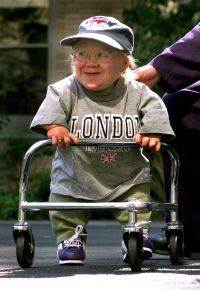
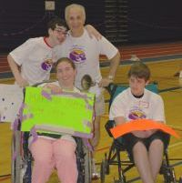
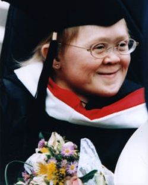

The Katie Lynch Foundation

The Katie Lynch Foundation
Mission The mission of the Katie Lynch Foundation is to fund programs that promote opportunities and respect for people with disabilities, enabling them to lead active, fulfilling lives.
The Foundation was established to honor Katie's commitment to eliminating the social and physical barriers members of the disabled community meet on a daily basis. Seeking to fund programs that support healthy lives, foster inclusion through education, and promote access to recreation for the disabled community, the Katie Lynch Foundation is a 501 (c) (3) private foundation and has no paid employees.
INSPIRATION FOR THE FOUNDATION
Katie Lynch, born with a unique form of dwarfism, used a powerchair for mobility and needed personal assistance all her life. In her 27 years, along with her health challenges, Katie faced societal barriers head on. When asked by a television reporter why she worked so tirelessly on behalf of Children's Hospital Boston, Katie Lynch looked into the camera and said, "Because every human being is worth it."
Katie knew she had been blessed with family and friends that loved and encouraged her and a community of highly trained medical and academic professionals who eagerly supported her fervent desire to become a valued member of society. It was Katie's heartfelt wish that every individual experience the love and respect that built the platform on which she stood so tall and that the doors she found closed would be opened to all.
FOUNDATION STRATEGY
The Foundation focuses its efforts in the areas of healthcare, education and community recreation. In order to maximize impact, the Foundation directs its resources to aid established programs and broaden their influence. When choosing initiatives, the Foundation seeks to increase exposure by working with partners such as Children's Hospital Boston and public school systems. In keeping with Katie's philosophy of "start small, think big," the Foundation is particularly interested in efforts where small amounts of money can make a real difference in people's day to day lives.
CURRENT AND PAST PROJECTS
Purple Shoes Challenge
The Foundation seeks to remove barriers which prevent people with disabilities from experiencing the pleasures, the sense of accomplishment, and the health benefits of fitness and community recreation. In support of this mission, the Foundation has created the Purple Shoes Challenge, a run/walk/wheel sporting event for people with physical and/or sensory limitations.
Opening Doors for Youth
In the area of health, the Katie Lynch Foundation supported Opening Doors for Youth , a pilot program directed by Children's Hospital Boston which offers young people with special healthcare needs and disabilities the opportunity to experience the joy and long term benefits of physical activity in a community setting.
Adventure Challenge
The Foundation is currently supporting Adventure challenge, a community service project through Children's Hospital Boston that pairs trained volunteers to provide one-to-one support for children with disabilities and special health care needs to exercise in their communities. The program model was developed as part of the Children's Hospital Boston and Institute for Community Inclusion research project "Opening Doors: Project Adventure."
http://www.openingdoorsforyouth.orgUnderstanding Our Differences
The Foundation is currently supportingUnderstanding our Differences, a unique disability awareness curriculum developed in Newton, Massachusetts to educate elementary school students about disabilities and to promote a culture of inclusion, friendship and respect. More than two hundred school systems nationwide have benefited from this program. The Foundation believes that the Understanding Our Differences program should reach more children and communities around the country.
